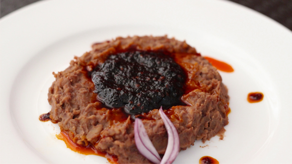

Ewa Agoyin

Ewa Agoyin is a Nigerian delicacy of smashed beans (ewa) and
a special spicy stew (agoyin). Ewa agoyin can be eaten on its
own but is popularly combined with Agege bread.
To make Ewa (&) Agoyin (stew) you need the following ingredients:
- Two cups of honey beans
- Blended crayfish
- 30 cl of palmoil
- Large onion
- Pepper (Ata rodo)
- Salt
- Bell Pepper
Steps
- Blend the bell pepper, onions and pepper in a
blender
- Add water to beans and cook till very soft
- Heat the oil in a medim sized pot and medium heat.
Once the oil is heated up a bit, add onions and fry
till the are golden. Then add the onions and pepper.
- Add the crayfish and other seasoning
- Turn the heat very low
- Serve hot with the beans!